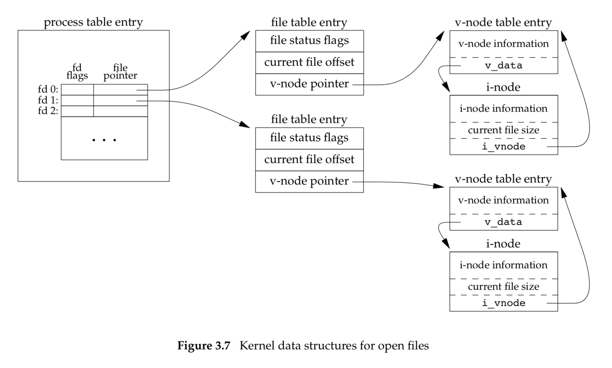

The kernel uses three data structures to represent an open file.
| 1. | File descriptor files - It is a table of open file descriptors. It's simply a pointer to a more in-depth information. |
|---|---|
| 2. | Table for all open files - It is maintained by a kernel. Each file table entry contains the file status flags (read, write, append, sync), the current file offest and the pointer to v-node. |
| 3. | V node structure/I node structure - It contains file information from disk such as the owner of the file, the size of the file |
NOTE: v-node doesn't exist in Linux. It uses a file-system-independent i-node and a file-system-dependent i-node.
In the program above, there are two different files opened. It is represented by two file descriptors and each file descriptor is pointing to each file table entry whose v-node pointer points to the corresponding v-node table entry. There is an one-to-one correspondence between the memory structure and the actual file on the disk, which means if there is a file called foo.c opened, there will be one and only v-node and i-node open.
The picture above represents two processes opening a file which are actually the same file. Each process has a file descriptor for the file and its own file table entry, but there is only one single v-node and i-node table entry, since they are the same file.
The diagram above represents when the dup() function was called. It is to duplicate the file descriptor and a new file descriptor which is guaranteed to be the lowest-number avalalbe is returned.
int dup(int fd);
int dup2(int fd, int fd2);
Therefore, the two file descriptors point to the same file table, which also point to the same v-node table.
The picture above describes what happens to file structures when fork() is called. The process table entry which has file desecriptors and file pointers gets duplicated to the child process (inherited from the parent). IMPORTANT: But note that file table is not duplicated, but both the parent and the child point to teh same file table. It is a great advantage when a child and a parent write so that their writes don't overlap, although the order may be unpredictable. It's possible because the updated offset is visible to both the child and the parent.
Does that mean both parent and the child have the same file descriptors for the same file that's open? Only right after fork(), yes they do. However, after that, they have thier own process, so they don't necessarily have the same file descriptors.
#include "he.h"
static void sig_int(int signo) {
printf("interrupt\n%% ");
}
int main() {
char buf[1000];
pid_t pid;
int status;
if (signal(SIGINT, sig_int) == SIG_ERR) perror("signal error");
printf("%% ");
while(fgets(buf, 1000, stdin) != NULL) {
if (buf[strlen(buf) - 1] == '\n')
buf[strlen(buf) - 1] = 0;
if ((pid = fork()) < 0) {
perror("fork error");
} else if (pid == 0) { /* child */
execlp(buf, buf, (char *)0);
perror("couldn't execute: ");
exit(127);
}
/* parent */
if ((pid = waitpid(pid, &status, 0)) < 0)
perror("waitpid error");
printf("%% ");
}
}
In Linux, the slow system call such as fgets() returns an error and gets terminated as soon as there was a singal interrupt. But in FreeBSD such as Mac OS, the slow system call does not get terminated, but it gets restarted.
errno is a global variable that gets set to the last error that occurred. When there is a signal interrupt, errno gets set to EINTR
But there is still a problem. Signal handler get reset after the first interrupt.
There is still a problem. If a signal interrupt occurs, before the signal gets reset (race condition), then it's a bug in this program. It's best if the kernel doesn't reset the handler. So one needs to use sigaction() instead.
There is still a problem. printf() is being called in the handler. No functions from std library should get called. Imagine printf() was called and trying to print something but in the middle of the call, it got interrupted. Whenever a signal interrupt occurs, the program stops what it's doing immediately and jump to the singal handler. And in the interrupt handler, it calls the printf again. Then the print would get messed up. Most functions are not re-entrant functions (a.k.a. async-signal-safe). You don't want to call them again if it was interrupted and didn't finish its job. If you need to print something in the signal handler, then instead of having a printf function, you can have a boolean flag to see if you are in the signal handler or not, and as soon as you are out of the handler, you call can print.
Note that signal is a very rudimentary way to communicate with a process. pipe() is one of the most basic ways to do interprocess communication.
int pipe(int fd[2]);
NOTE: the "2" doesn't do anything meaningful. The code above is equivalent to
int pipe(int *fd);
The diagram above describes when a process output gets redirected using pipe(). NOTE: fd[0] doesn't mean that its file descriptor is 0, but simply 0th index of fd.
If you fork, this is what happens.
Note that the file descriptors are copied from the parent process to the child process after fork(). The problem here is that pipe is needs to be one way unless it's a duplex pipe. One can think of haivng a pipe as a having one water stream. In this case, there are two streams in the pipe. So what happens is if the child writes to the pipe and tries to read it, it will read nothing. When a parent attempts to read it, it will read nothign as well.

One can close fd[1] in parent and fd[0] in child or vice versa.
#include
#include
#include
#include
#include
#include
#include
#include
#define MAXLINE 1000
int main(int argc, char **argv) {
int n;
int fd[2];
pid_t pid;
char *pager, *argv0;
char line[MAXLINE];
FILE *fp;
//NOTE: pager is reading from stdin and nicely formats what it read. pagers are a text reader.
if (argc != 2) {
perror("wrong usage");
}
if ((fp = fopen(argv[1], "r")) == NULL)
perror("can't open");
if (pipe(fd) < 0) // those file descriptors are a pipe now.
perror("pipe error");
if ((pid = fork()) < 0)
perror("fork error");
else if(pid >0) { // parent - reads from a file and writes it to the pipe
close(fd[0]); // close input reading
while (fgets(line, MAXLINE, fp) != NULL) { // parent reads from the file and writes to the pipe
n = strlen(line);
if (write(fd[1], line, n) != n) perror("write error");
}
if (ferror(fp))
perror("fgets error");
close(fd[1]); // close pipe after it's done
if (waitpid(pid, NULL, 0) < 0)
perror("waitpid failed");
} else {
// child - reads from the pipe, redirects stdin of the pager, so that it comes from the pipe and execute a pager
close(fd[1]); //close write output
// this null check is unnecessary, but it's done as a standard pattern to avoid closing STDIN_FILENO, because dup2 firts disassociates the one on the right, which is STDIN_FILENO
if (fd[0] != STDIN_FILENO) {
if (dup2(fd[0], STDIN_FILENO) != STDIN_FILENO) // STDIN_FILENO is redirected to fd[0]. stdin is now fd[0]
// dup2 first closes STDIN_FILENO and make it available. Then it makes STDIN_FILENO be the same as fd[0]
// it's equivalent to close(STDIN_FILENO) and dup(fd[0]), because dup will find the lowest possible file descriptor, which is 0 in this case.
perror("dup2 error to stdin");
// you don't need the fd[0] anymore, because whatever the address fd[0] was pointing to is now being pointed by stdin_fileno
close(fd[0]);
}
if ((pager = getenv("PAGER")) == NULL)
pager = "./hello"; // default pager value
//what is the purpose of this if check? -> to remove the '/'
if ((argv0 = strrchr(pager, '/')) != NULL) //strrchr = returns a pointer to the last occurrence of a character
argv0++;
else
argv0 = pager;
//pager and argv0 are the same thing e.g. execl("/home/vlc", "/home/vlc", "movie.mkv", NULL);
if (execl(pager, argv0, (char *)0) < 0) //
perror("execl error");
}
}
NOTE: closing file descriptors immediately is not necessary, but it's useful to keep the number of open file descriptors as low as possible because there is a limited number of file descriptors that can be open for a process.
NOTE: the pipe needs to be one way. It doesn't matter how many file descriptors are there to represent it by using dup(), but the point is it has to be a one way communication.
NOTE: filling in the blanks could be an exam question for pipe() related code like this.
DRAWBACKS of pipes: (1) It's one way. (2) The processes have to be related as a parent or a child